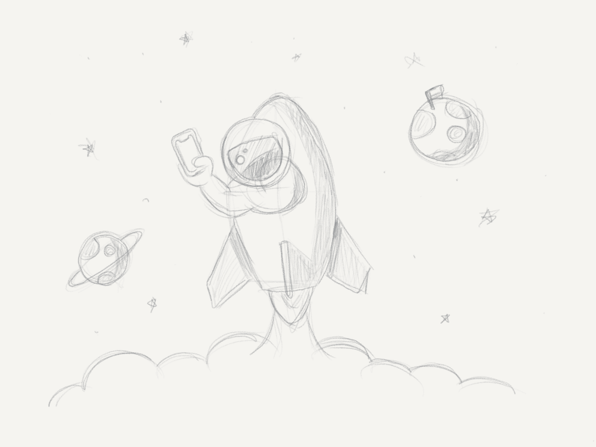
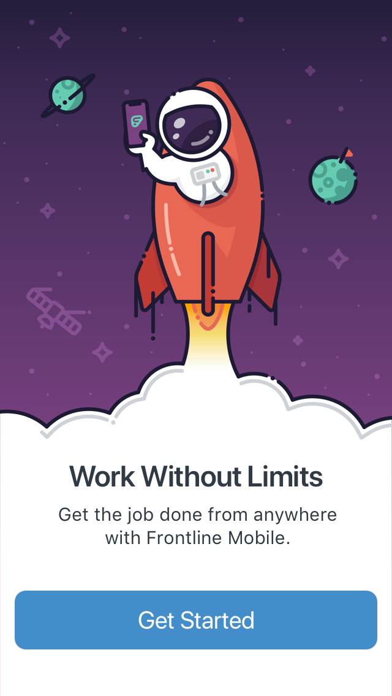
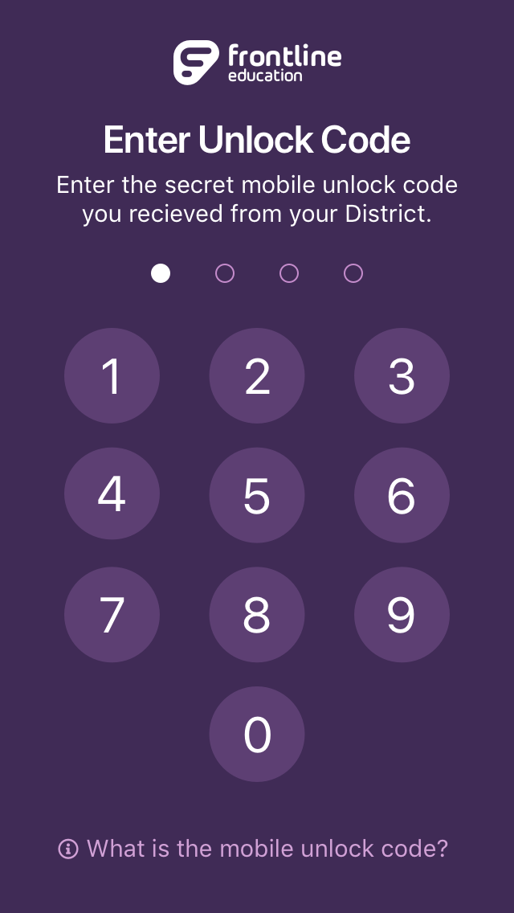
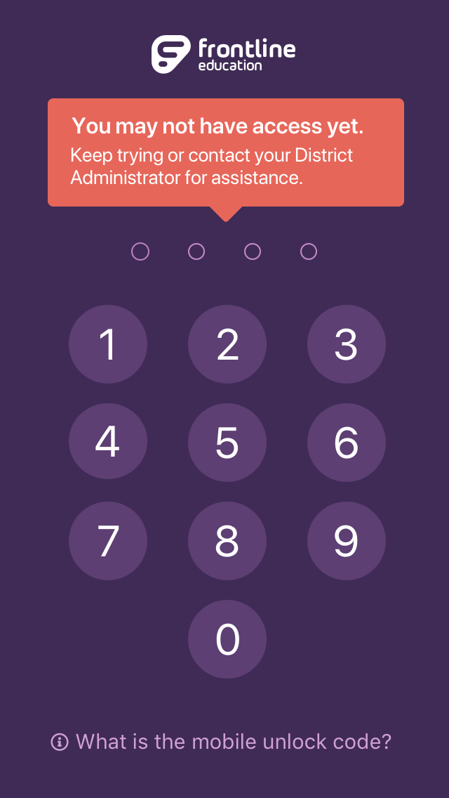
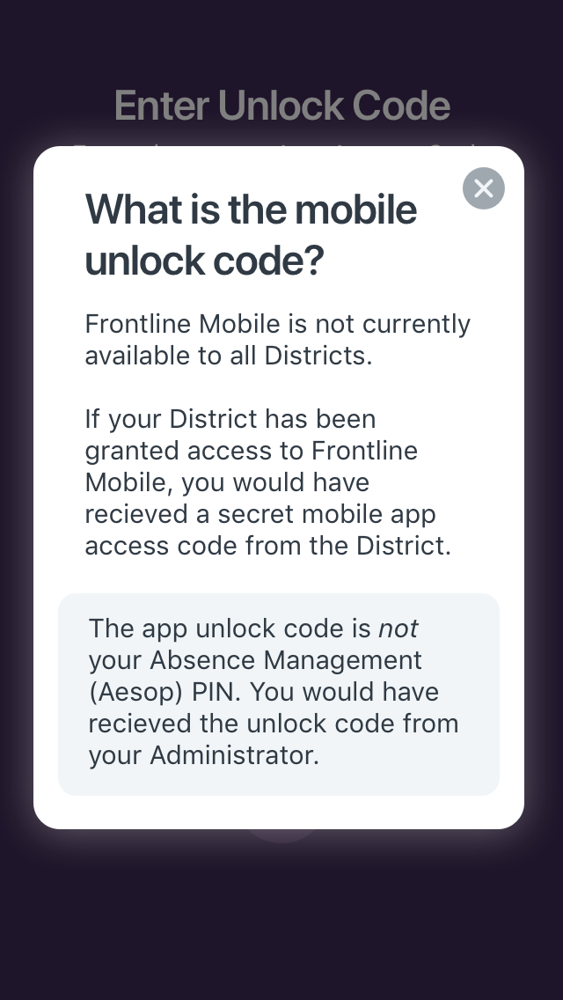
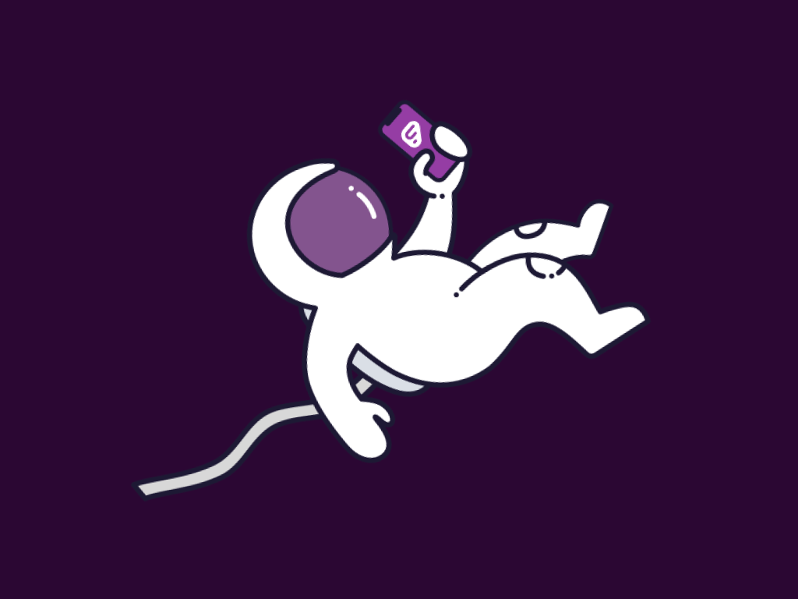
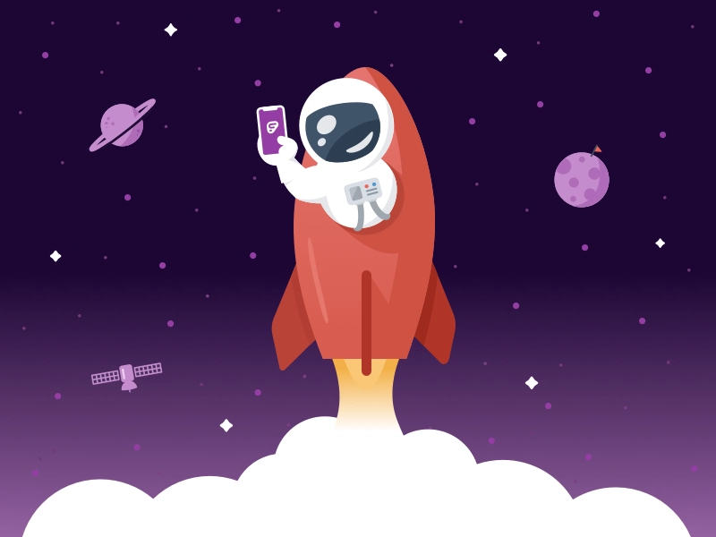

The Project
One of Frontline Mobile's biggest challenges is that it is built on top of a suite of legacy applications that have been built in-house or acquired over many years. Frontline's platform aspiration means a shift from many, siloed applications to a single, needs-centric (as opposed to application-centric) product. Though the end-goal is a noble one, the transition can be confusing and frustrating for users.

Previously, a new user's first experience with Frontline Mobile was a frustrating one. Upon interacting with the app for the first time, a user would be presented with a text-heavy screen, explaining that the app was only available for the small number of customers that had upgraded to "the platform" (the app required a user to log in with their universal platform ID instead of credentials for an individual application). The user would be prompted to enter a 4-digit PIN that was provided by Frontline and communicated by the District. This caused an understandable amount of confusion for many users. People who were technically eligible to access the app were confusing this new PIN code with the PIN used to log in to one of our flagship products. They were entering the wrong PIN over and over. Alternatively, users who were not eligible would find the app and download it, but would have never recieved the PIN code from their organization, leaving them confused, frustrated, and angry.
The Solution
This was a multi-layered problem. Based on information gathered from customer feedback & support requests, we developed an idea for a light-hearted introductory screen that would provide an instant sense of delight and whimsey. The illustration was a collaboration between myself and fellow designer Jon Pope. It played off of the idea that, for the first time, users could access this functionality from a mobile device. The quip "Work without limits" and our beloved space man were born.

Next, to shift the user's thinking away from a password, we implented an keypad to communicate the need to unlock access to the app, instead of validate identity. This keypad would automatically provide help text upon the third mis-typed code. Along with the shift away from a text-entry box, we carefully crafted the language not to use the work PIN. Instead we called it a "secret unlock code".
The Result
After releasing the new onboarding experience, we saw an immediate decrease in the number of support requests related to the PIN upon first entering the app. Also, the new onboarding experience, along with a new in-app prompt, helped to improve the iOS app's App Store rating from 1.6 stars to 4 stars in a matter of weeks. At the time of writing, the app sits at 4.3 stars.




Illustrations
While we ended up launching (pun intended) with the "blast off" illustration seen above, I created alternative illustration options as well. This one was a completely different direction, moving away from the "launch" concept and focusing more on having "arrived." While I really liked this illustration, I think the "launch" version told a better story for this particular case.

This illustration was my original concept artwork before we refactored it to fit in better with the brand's existing illustration style.

Ready for more? Check out more of my work here.